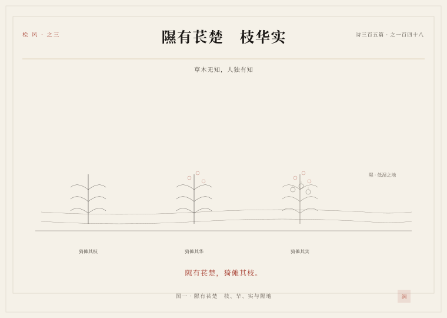
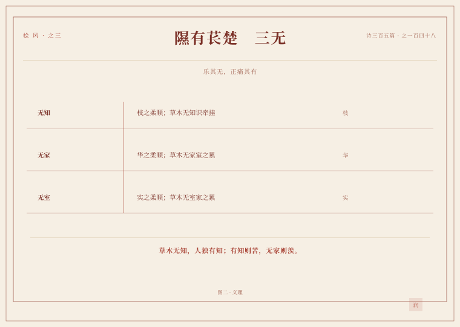

第一百四十八篇 隰有苌楚
桧风 · 之三 SJ148
朗读 · 普通话
依经文原文朗读，章次不读出；配古琴底乐，不改速、不加拖腔。全库同一音色（豆包 TTS），非播音员录制。
一 解题
诗三判：
- 谁在说：桧国之人。政繁赋重，人不堪其苦，见隰地苌楚枝叶柔顺、华实自好，遂羡其无知、无家、无室。
- 说什么事：三章只写一株苌楚：枝、华、实；只写三「乐」：乐子之无知、无家、无室。羡草木，正是苦人事。
- 为何编在此：桧风第三篇。前两篇伤政废、礼废，此篇写民苦；政礼俱废，最后落到「人不如草」。
《毛序》：「《隰有苌楚》，疾恣也。国人疾其君之淫恣，而思无情欲者也。」
朱子《诗集传》：「赋也。苌楚，铫弋也；今羊桃也。猗傩，柔顺也。夭，少好貌。沃沃，光泽也。子，指苌楚也。无知，谓无知识也。」二章：「无家，谓无室家之累。」三章：「无室，犹无家也。」
本库的看法：《隰有苌楚》是一首把「人不如草」写成三「乐」的诗。
毛序说「疾其君之淫恣」，朱子说「羡其无知」，二说一政一情，其实同指：不是草木可乐，是人世可苦。
须辨：苌楚是羊桃，不是荆棘；「无知」是无知识、无牵挂，不是骂人无知；「无家」「无室」是无家室之累，不是无家可归。三「乐」皆是反言：乐其无，正痛其有。
断语：草木无知，人独有知；有知则苦，无家则羡。
先辨五事：「苌楚」是羊桃，不是荆楚；「猗傩」是柔顺，不是妖冶；「夭」是少好，不是夭折；「沃沃」是光泽，不是肥沃；「无知」是无知识牵挂，不是愚笨。
二 经文
第一章
隰有苌楚，猗傩其枝。
夭之沃沃，乐子之无知。
第二章
隰有苌楚，猗傩其华。
夭之沃沃，乐子之无家。
第三章
隰有苌楚，猗傩其实。
夭之沃沃，乐子之无室。
三 韵读
- 一章：楚、枝、知，支部相叶。三字一韵，声轻而苦。
- 二章：楚、华、家，麻部相叶。转麻，声开而怨。
- 三章：楚、实、室，质部相叶。入声收束，声促而尽。
读法：三章由枝而华而实，草木一节一节长；韵由支而麻而质，人事一节一节逼；末章入声，正是「无室」之尽。
四 字义与名物
- 隰：低湿之地。苌楚：羊桃，今猕猴桃一类，枝弱而蔓生。猗傩：柔顺貌。夭：少好貌。沃沃：光泽貌。
- 子：指苌楚。无知：无知识、无牵挂。无家：无家室之累。无室：犹无家。
- 华：花。实：果实。
五 今译
一章：低湿之地有苌楚，枝条柔顺婀娜。少好而光泽沃沃，乐你没有知识牵挂。
二章：低湿之地有苌楚，花开柔顺婀娜。少好而光泽沃沃，乐你没有家室之累。
三章：低湿之地有苌楚，结子柔顺婀娜。少好而光泽沃沃，乐你没有家室之累。
六 章旨
- 一章：枝之柔顺，写「无知」；草木无知识，故无是非，无得失。
- 二章：华之柔顺，写「无家」；草木无家，故无婚娶，无离别。
- 三章：实之柔顺，写「无室」；草木无室，故无赋役，无离散。
三章由枝而华而实，正是人由少而壮而老，苦一层深一层。
七 诗教
- 反言见痛：三「乐」不是真乐，是苦极而羡；读成真乐，则诗亡。
- 草木是镜：苌楚之柔顺，照出人事之纠缠；不是教人无情，是教人看见有情之累。
- 政繁赋重：毛序「疾其君之淫恣」，朱子「羡其无知」，一政一情，合看才全。
八 分寸与边界
- 不把「乐」读成真乐：乐其无知，正痛其有知；反言一正读，便成老庄，不是诗经。
- 不把「无知」读成愚民：「无知」是无知识牵挂，不是骂人愚笨；朱子「无知识」三字最稳。
- 不把苌楚当荆棘：苌楚是羊桃，枝弱花实皆可玩；认错名物，柔顺之义便失。
- 不把此篇读成出世诗：诗人不是要人无家，是要人看见有家之难。
九 存疑
- 诗旨：毛序「疾恣」，朱子「羡无知」。本库从毛朱，以民苦为骨，以反言为法。
- 「苌楚」：毛传「铫弋」，朱子「羊桃」；今名猕猴桃一类。从羊桃。
- 「无知」：一说无知识，一说无知觉。从无知识牵挂。
- 所刺之君：桧国世次不明。存参，不指实。
十 跨典
- 《老子》「吾所以有大患者，为吾有身」；此篇「乐子之无知」，同一「有身之患」，而诗更痛。
- 《庄子》「无用之用」；苌楚以无用自全，人却以有知受役。
- 《魏风·硕鼠》「逝将去女，适彼乐土」；此篇不逃，只羡；一逃一羡，皆是民苦。
十一 双卡与图
六对：
| 苌楚（羊桃） |
苌楚（荆棘） |
| 猗傩（柔顺） |
猗傩（妖冶） |
| 夭（少好） |
夭（夭折） |
| 沃沃（光泽） |
沃沃（肥沃） |
| 无知（无知识牵挂） |
无知（愚笨） |
| 乐（反言，苦极而羡） |
乐（真乐） |

图一 · 隰有苌楚 枝、华、实与隰地

图二 · 隰有苌楚 无知、无家、无室